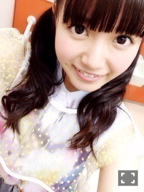
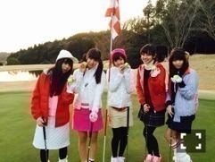
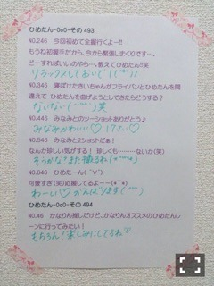

| 2015/02 07 Sat | ひめたん-OoO-その519 |
今日はアルバムスペシャル握手会！
来てくれたみなさん
ありがとうございました( ˇωˇ )
初めてのスペシャル握手会
どうだったかな？
いつものとはちょっと違って
乃木坂の衣装での握手しました！
1部 バレッタ


2部 生まれたままで

3部 ぐるぐるカーテン
4部 制服のマネキン
午後から体調が悪くなってしまって
椅子に座ってたり
元気なかったりしてごめんね( >_< )
写メも撮ってなくて
ここに貼れないのが申し訳ないです
今夜体調整えなければ。
ステージ衣装を間近で見ることが
なかなかないみたいで
新鮮だったかな～(´｡･v･｡｀)
刺繍こうなってるんだ！とか
生地が思ってたのと違う！とか
新しい発見があったんじゃないかなと
思います
ひめも、乃木坂の衣装を着て
握手会ってのが不思議な感じでした～
今日は格差社会コンビの
あすかりんとお隣のレーンだったので
衣装もツインもおそろっち♡
そうそう、11thは
ツインの触角なしでいくことに
なりましたのでそれも報告。
その方が顔色が
明るく見えていいよって
みんなに言われたのと
あとは自分自身への戒めを込めて(笑)
触角があると油断しちゃうからね
明日は10th最後の個別握手会
会場はパシフィコ横浜なので
お間違いなきように！
お洋服も楽しみにしててね♡
のぎ天！ゴルフ部！

新入部員に
ちーちゃんをお迎えしました（ ˆoˆ ）
新しいウエアは
いかがでしょうかー？
4回目になりますゴルフ部ですが
なんか空振りが減ってきた
ような気がする！
今までで一番楽しかったです( ˇωˇ )
アプローチって難しいなあ
もっと練習したいなって思いました
いつかコースまわりたいな
コースの中を
移動する車あるじゃないですか
あれ らりんが運転してくれた♡♡
さっすがオートバックス選抜♡
ナイスびーむ
来週も見てね（＾ω＾）
料理部にお邪魔しました☆

せいたんの卒業が発表されました
同じ上京組として頑張ってきて
歳も近かったりするから
寂しいなあ......
でも自分で決断して
自分で道を切り開いていく姿は
本当に眩しいし頼もしい。
今は、せいたんの残りの活動が
充実したものになるように
精一杯努めたいなと思っています。

 ２月２日はツインテールの日ですが
２月２日はツインテールの日ですが
ツインテールしましたか？
オフだったので
一日中おうちにいました
ツインテール......
サッカー部の男子って
どんなイメージですか⁈
爽やか！！って感じ
高校サッカー観るの好きでしたよ☆
怪我には気を付けてね(´；ω；｀)
ひめたんは、何をしているときが
テンションが上がりますか？
甘いの食べてるときかなー
甘いの食べたいなー
ひめたんのお洋服は
どこのものが多いの？
ピンクっぽいお洋服が多いのかな？
LIZ LISA、LODISPOTTOとか。
ひとりでお買い物に行くと
ぴんくのものたくさん買ってしまいます
早く春にならないかなあ( ˇωˇ )
お母さんがジャンプとシャンプー
間違えて買ってきました。
どう思いますか？
ドジッ子(゜ω゜)♡
ひめたんの好きな言葉とかある？
一期一会！
よく日記に書いているので
ずっと読んでくれてる人は
知ってるかもだけど
小学校の時にお世話になった
担任の先生が大切にしていた言葉です。
こんどあしゅりん推しの彼女に
誕生日プレゼントしようと
思っているんだけど何が喜ばれるかな？
「自分で考えろヘタレ♡」って
あしゅりん言ってたよ(゜ω゜)
今度あしゅりんレーンに
連れてってあげてね
ちなみにあしゅりんはひめの日記
読んでくれてるらしい！
パンはパンでも
ひめたんの好きなパンはなーんだ？
えーわかんなーい（＾ω＾）答えは？
カレンダー、その気持ち
すごくわかるよ
ひめたんは何月にでてくるかな？
12月......最後！
みんな、惜しいかもしれないけど
ちゃんと最後までめくってね☆
ひめたんの日記の
コメント欄下２ケタに46を踏んだ方へ
手書きでコメ返するコーナー
＼ ひめたん46 ／



いつもたくさんのコメント
ありがとうございます
最近はいろいろとばたばたしてて
メールとかも少なくて
ごめんね(´；ω；｀)
ああ、ひめは今頃
頑張っているんだろうなあと
思っていただければ間違ってないよ♡
ライブも11枚目も
楽しみにしてて下さい！
(＊´・ω・＊)
コメント(970)
2015/02/07 23:18